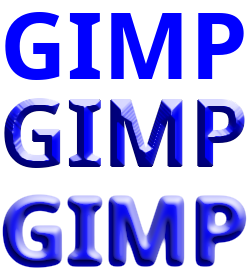

Figure 17.151. Applying example for the Bevel filter

From top to bottom, without bevel, “Chamfer” bevel, and “Bump” bevel.
This filter adds a bevel to the layer. This filter works best when there are transparent areas around a colored shape.

- Presets, “Input Type”, Clipping, Blending Options, Preview, Merge filter, Split view
-
![[Note]](images/note.png)
Note These options are described in Section 2, “Common Features”.
- Bevel Type
-
You can choose between the following bevel types: Chamfer (the default) and Bump.
- Chamfer
-
Simulates lighting of chamfered 3D-edges. Chamfered edges are sloped edges between two faces of an object.
- Bump
-
Makes a 3D effect by adding an emboss effect on top of a blur.
- Blend Mode
-
Several blend modes can be chosen here to adjust the effect. The first one, None, is for when you intend to set a blend mode for the layer in GIMP.
- Distance Map Setting
-
Only available for Chamfer. There are three choices that each change the structure of the chamfer. Experiment to see what works best for your image.
- Euclidean
-
The distance is a straight line.
- Manhattan
-
The distance is the sum of the one-dimensional distances along the X and Y axes.
- Chebyshev
-
The distance is the maximum of the one-dimensional distances along the X and Y axes.
- Radius
-
Only available for Bump. This determines the size of the softening for the bump.
- Elevation
-
This controls the elevation angle of the bevel.
- Depth
-
This controls the emboss depth; i.e. how deep and detailed the bevel will be.
- Light Angle
-
This controls the angle of the light source illuminating and shading the bevel.